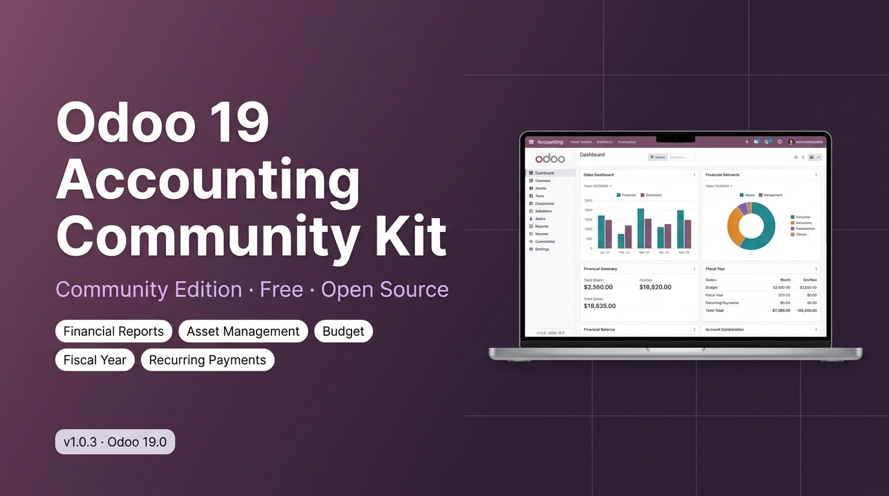
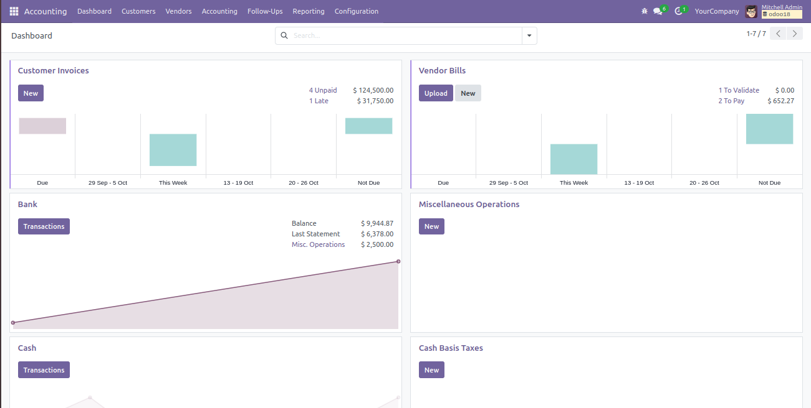
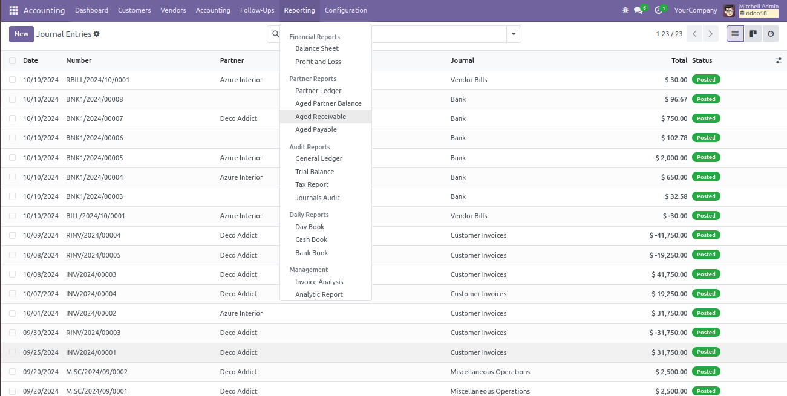
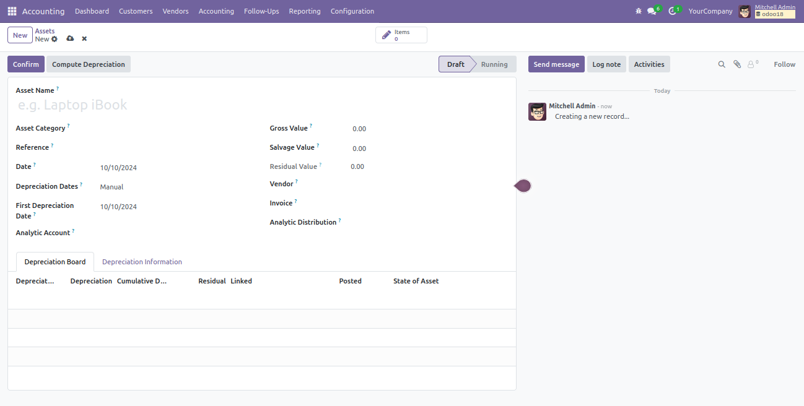
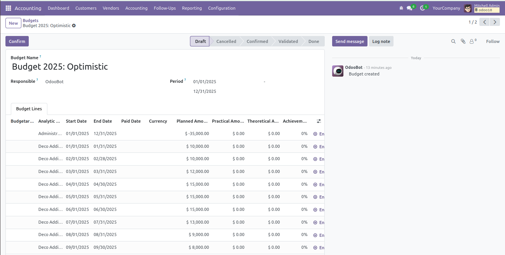
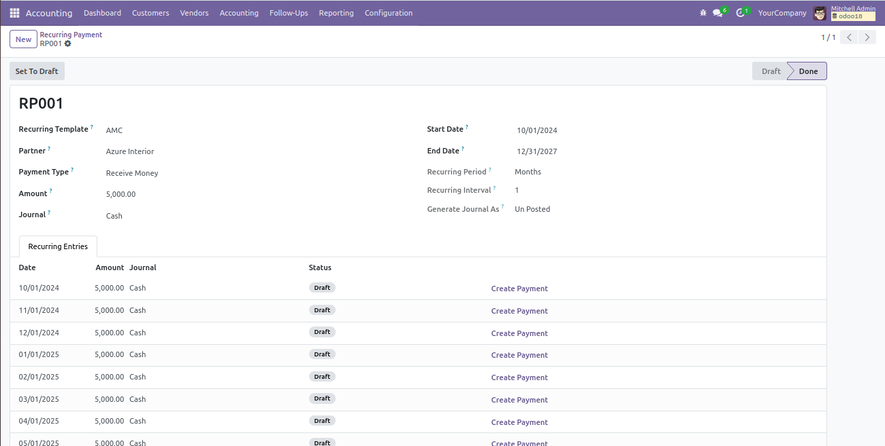
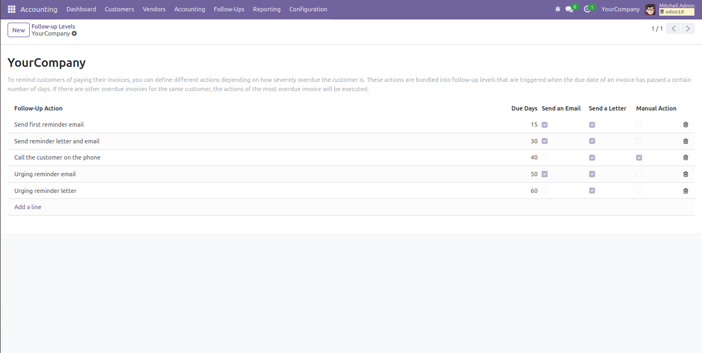
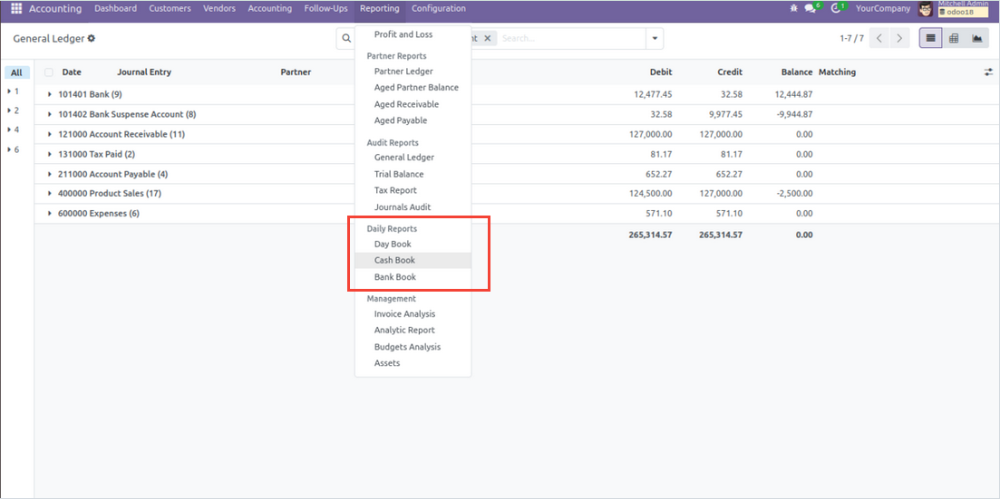
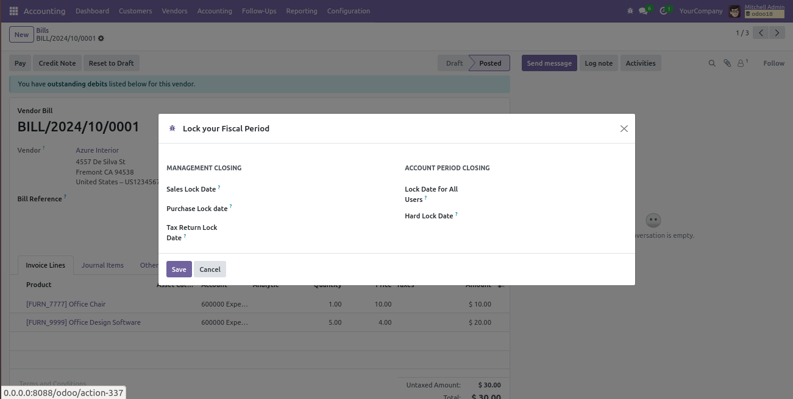
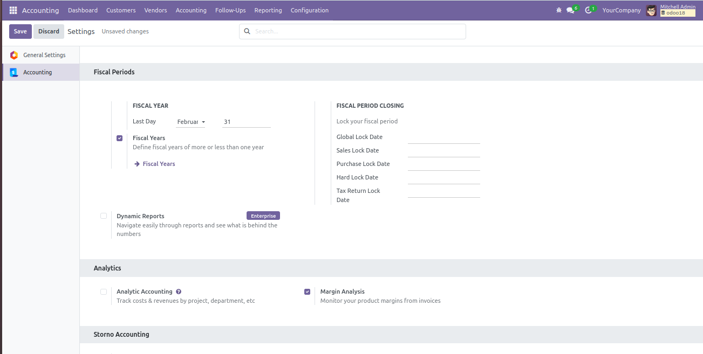

Financial Reports, Asset Management, Budget Control, Recurring Payments, Fiscal Year Lock, Accounting Dashboard, Customer Follow-Up, Daily Reports, and Bank Statement Import - all in one module.
The Accounting Dashboard gives your finance team a unified view of the most important metrics: outstanding invoices, bank balances, journal entries, and cash flow, all accessible the moment they log in.

Everything your accounting team needs, working together seamlessly inside Odoo.
P&L, Balance Sheet, Cash Flow, and General Ledger - all exportable to PDF and Excel.
Track fixed assets, compute depreciation, and manage asset lifecycles automatically.
Define budgets per analytic account and monitor actual vs. planned spending in real time.
Automate journal entries for subscriptions, rent, and other recurring transactions.
Define fiscal years and lock periods to prevent unauthorized modifications.
Send payment reminders, track overdue invoices, and manage collection workflows.
End-of-day cash and journal summaries in print-ready PDF format.
Import bank statements in OFX, QIF, and CSV formats for quick reconciliation.

Generate Profit & Loss, Balance Sheet, Trial Balance, Cash Flow Statement, and General Ledger reports, all filterable by date range, company, and journal.
Track the full lifecycle of every fixed asset, from acquisition and depreciation to disposal, with automatic journal entries at every stage.

Define budgets against analytic accounts and watch actual spending measured in real time against your planned figures, by department, project, or cost center.

Save time on repetitive tasks and never miss a collection opportunity.



Print daily transaction summaries, cash receipts, and journal reports - perfect for teams that need a paper trail of every day's accounting activity.
Define your fiscal year, set lock dates for closed periods, and configure all accounting settings from one central place.


| Sub-Module | What it provides |
|---|---|
| Financial Reports | P&L, Balance Sheet, Cash Flow, Trial Balance, General Ledger with PDF/Excel export. |
| Asset Management | Fixed asset tracking, depreciation scheduling, disposal, and automatic journal entries. |
| Budget Management | Budget vs. actual tracking per analytic account, department, or project. |
| Recurring Payments | Automated journal entry templates on daily, weekly, monthly, or custom schedules. |
| Fiscal Year & Lock Dates | Custom fiscal year definition and period locking to prevent unauthorized edits. |
| Customer Follow-Up | Overdue invoice reminders, follow-up levels, and collection activity tracking. |
| Daily Reports | End-of-day cash and journal summaries in print-ready PDF format. |
| Bank Statement Import | Import bank statements in OFX, QIF, and CSV formats for reconciliation. |
All reports and features fully support multi-company and multi-currency Odoo setups.
Lock closed accounting periods to prevent accidental modifications after month-end close.
Every report can be exported to PDF or Excel for sharing, archiving, and auditing.
This module is designed for businesses running Odoo Community Edition. It does not require Odoo Enterprise and works entirely with the free, open-source version of Odoo 19. All sub-modules are included and installed as dependencies automatically upon installation.
One install. Eight accounting features. Full community support included.